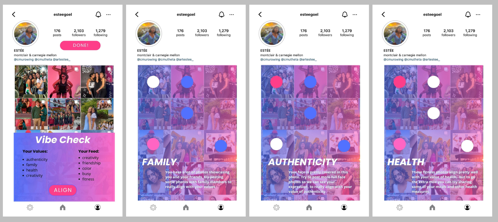

Problem Space
Social media has become a primary form of communication in todays digital age, however, we all know that its common for online content to be inauthentic. Our project aims to bridge the gap between users’ self-perception and external perceptions on social media platforms by fostering more authenticity than what is typically seen. Ideally, this would lead to a far more genuine portrayal on social media.
Our target users are socially active individuals aged 18–35 who are receptive to self-improvement, and acknowledge the dissonance between their own self-perception and external perceptions of themselves online.
Solution Overview
We have developed a prototype for an AI-powered social media analysis extension that analyzes users’ social media (Instagram) posts and provides personalized insights into the discrepancies between their online persona and genuine identity.
The app offers strategies for alignment based on psychological principles, empowering users to make conscious choices about their online presence. This concept integrates technology and psychology to facilitate behavior change and promote authenticity.
Key Features
→ personal AI analysis of a user's feed for curated feedback
→ explore page feature for human input to enhance AI capabilities
→ VibeAI chatbot for personalized, real-time conversation
Research
11
Sources for literature review
3
Interviews with experts in the field
1
Competitor analysis for similar products
Key Findings
01 individuals who express themselves more authentically on social media report greater life satisfaction
02 social media is a tool for self-expression and advocacy
Social Media can be a vessel to connect with friends, but there are so many additional layers of interacting with acquaintances or using media as a vessel for work that make it a much more complicated entity
Ideation
How might we...
→ bridge the gap between users' real-life personas and their online representations?
→ leverage AI to align social media profiles with personal values and goals?
→ apply principles of cognitive dissonance to minimize the conflict between a user's actual self and virtual identity
Initial Features
We wanted to ensure the following was included in our iterative design process:
01 Instagram credentials log-in page
02 Preliminary core values questionnaire
03 VibeAI initial profile analysis
04 Suggestions
Lo-Fi Prototypes
We employed an iterative design process with real user testing and feedback consideration to create the final product of VibeAI. First, we each individually created one lo-fi prototype, to better understand each group member's thought process.
My idea is at the top left:
User testing showed that key desired features include a "vibe check calculator" to assess post vibes and provide specific adjustment recommendations.
Users also expressed interest in AI-generated feed ideas for new posts, rather than just feedback on existing posts.
Mid-Fi Prototypes
We considered the pros and cons of our 5 low-fi prototypes and created 3 mid-fi prototypes, using componets from each design. I prototyped out the top left again:

User testers demonstrated a strong preference for having specific recommendations about what to post and what to take down, appreciating the specificity and details
Users also express varying preferences regarding privacy and feedback sources, suggesting options for real vs AI feedback to enhance accuracy
Final Prototype
Synthesis
As a team, we synthesized our user testing feedback to understand what we needed to include in the final protoype.
In my role as the design lead, I created the entire Hi-Fi prototype using Procreate for drawings and Canva for animations.
Onboarding
With our three onboarding screens, users are able to self select what their core values are, and what they use instagram for among other questions. While these ideal values can be changed later on in settings, we hope that this primes users to think more about what they truly believe in, before even enteirng the app.
Analysis Feature
After onboarding, our first row of screen-captures shows a personal analysis from VibeAI.
On the profile page, the Artificial Intelligence is able to analyze a user’s posts, and inform them which components of their curated “vibe” is misaligned with their self selected core values.
After clicking the “align” button, users can navigate over more details in their posts.
Users are given clear suggestions on how to align their content better with their values.
Human Input & Chatbot Features
We as a group understood that solely relying on AI can have harmful consequences, so I included a component of human analysis. On the home page, we can see other users who are more than 3 connections away — that is we have 0 mutual connections — and contribute to their analysis as well.
The idea here would be that these are people who users do not know in real life, and thus they are analyzing their social media and not the person they know.
These contributions will improve the AI algorithm for other users.
In our final feature, I prototyped a chatbot where users can run posts by VibeAI before posting, to see how well they align with their core values. The chatbot will also make suggestions on room for imrovement.
Final Prototype
Please enter full screen for the full experience